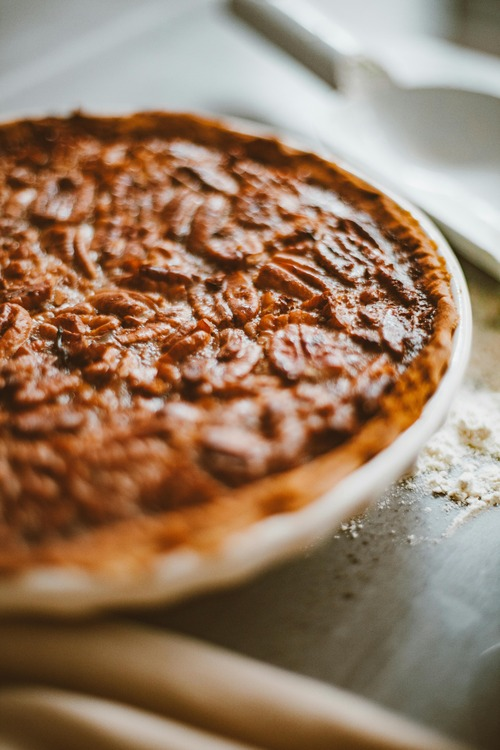

Pecan Pie

Description
This pecan pie recipe makes a wonderfully rich, Southern-style pecan pie. It's the best I've ever tasted!
Ingredients
- sugar
- corn syrup
- butter
- cornstarch and water
- eggs
- salt
- vanilla
- pecans
- pie shell
Steps
- Preheat the oven to 350 degrees F (175 degrees C).
- Combine sugar, corn syrup, butter, water, and cornstarch in a saucepan over medium heat. Bring to a full boil; remove from heat.
- Beat eggs in a large bowl with an electric mixer until frothy. Gradually beat in cooked syrup mixture. Stir in salt, vanilla, and pecans.
- Pour pecan mixture into pie shell.
- Bake in the preheated oven until filling is set, 45 to 50 minutes.
- Enjoy!